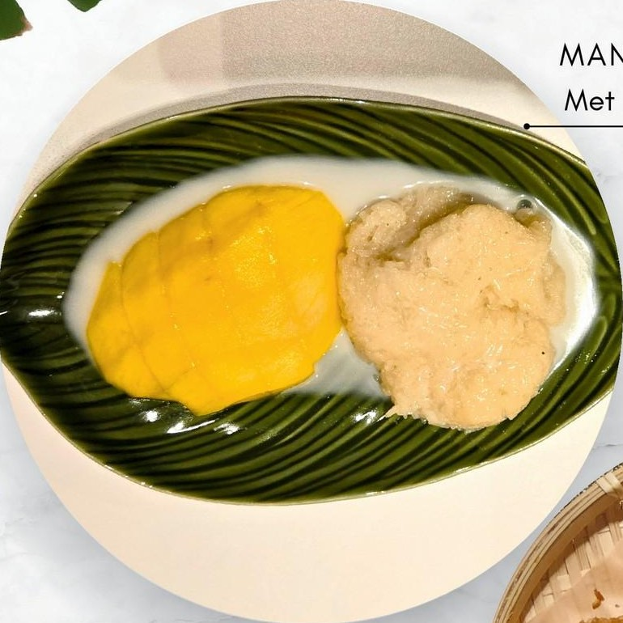
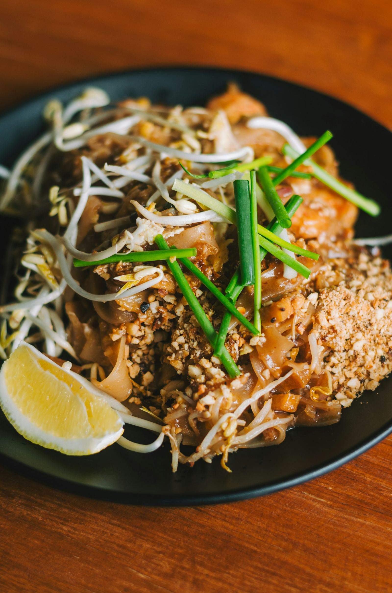

Burgemeester van Dijkeplein
's Avonds en op zondag parkeert u hier gratis.
Thais (afhaal)restaurant aan het Maandereind in Ede
Lekker Thais: kom bij ons eten, haal het op of laat het thuisbezorgen.


Mango sticky rice
Tijdens het online bestellen kiest u voor afhalen of thuis laten bezorgen. Liever bellen? Dat kan altijd: geef uw bestelling gewoon telefonisch door.
Wij bezorgen in Ede, inclusief de Horalaan in Bennekom. Bezorging in andere plaatsen in overleg: neem dan even telefonisch contact met ons op.
Wij bezorgen niet altijd en onze openingstijden zijn niet onze bezorgtijden. De actuele bezorgtijden ziet u in de webwinkel.
Laat tijdens het bestellen een "bericht aan de verkoper" achter, bijvoorbeeld hoe laat u de bestelling wilt ontvangen of dat het niet te pittig moet.


Thais eten voor een feest, een verjaardag of op het werk? Vraag naar de mogelijkheden, telefonisch of per e-mail.
Komt u met de auto? Er zijn drie handige plekken op loopafstand van het Maandereind.
's Avonds en op zondag parkeert u hier gratis.
Overdekt parkeren. Achterdoelen 45, 6711 AV Ede.
Overdekt parkeren. De Halte 269, 6711 NZ Ede.
| Maandag | 16.00 – 20.00 |
| Dinsdag | 16.00 – 21.00 |
| Woensdag | 16.00 – 21.00 |
| Donderdag | 16.00 – 21.00 |
| Vrijdag | 14.00 – 21.00 |
| Zaterdag | 12.00 – 21.00 |
| Zondag | 16.00 – 21.00 |
Onze openingstijden zijn niet onze bezorgtijden. De actuele bezorgtijden vindt u in de webwinkel.
Thais (afhaal)restaurant De Mangoboom
Maandereind 23
6711 AA Ede
06-44336710 · 0318-784973
info@de-mangoboom.nl